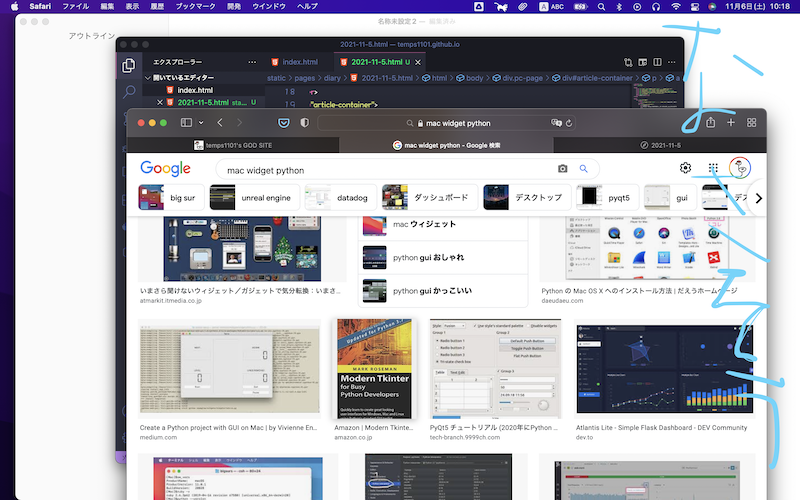

昨日はちょいとばっかし忙しかったから6日に書いた。今日（というか昨日だが、「今日」と書く）は塾で驚くほど集中できた。その理由は至って簡単。親の勧めでリポDを飲んだからである。それまではリポDなんて意味がないとか、大人が飲むものって思っていて全く触れていなかったが、親に最近すぐ疲れちゃうって相談したらリポDを買ってきてくれた。めちゃくちゃ効き目が良かったが、良薬は口に苦しとはこのことだと思うくらい不味かった。本当に飲んでると不快な飲み物である。
通知が来たんです。はっきりとは覚えてはいないが、「MacOS Montereyに更新」みたいな感じだった。ぼくはBig Sur時代にMacを購入したので、OSバージョンアップが一体どういうものなのかが全く知らなかった。もしかしてファイル全部消えてしまうのでは…とかって思ったが、試しウィザード*してみると、そのような警告はしないで最終確認画面までいったので、もうええや！って思って塾に行く数十分前に更新ボタンを押しました。数十分後、塾に行く直前に完了しました。気に入っていたBig Surのデスクトップ写真（下を参考にー）が奇妙な谷みたいな写真に勝手に変更されていて、戻そうと思ったが、何回か試行錯誤しないと戻せなかった。
ここにMontereyのことを書いてみた（少しブログ伸びたらモチベに繋がりそうなので、タイムリーな記事もあげた方がいいのかなぁと）
とりあえず言えることは、M1のBig SurからMontereyにアップグレードによって起こる死傷は勝手にデスクトップ背景が変えられて直すのだるいみたいな感じかなぁ。まぁ使ってってみよーー
MacのウィジェットにPythonシェルあったら便利じゃね？？？！！！って思った。っていうかもうそういうアプリあるのかなぁ。調べてみよぉ
調べ中。最近気づいたのが、画像検索の方がサイトでどんなこと言ってるのかがよくわかる＆一度にたくさんの候補を見れるからいいのがわかった。百聞は一見にしかずとはこのことなのかなぁ。まぁ調べる内容にもよるけどね。プログラミングのこととか調べるときは（特にアルゴリズム系）画像検索はあんまり役に立たない。
結果：ない！
とりあえずさっき使い始めようと決心したリマインダーに一つ目のToDoを書いた。とりあえずここも参考になりそうだからメモっとこ
今日（6日w）も楽しむぜ！